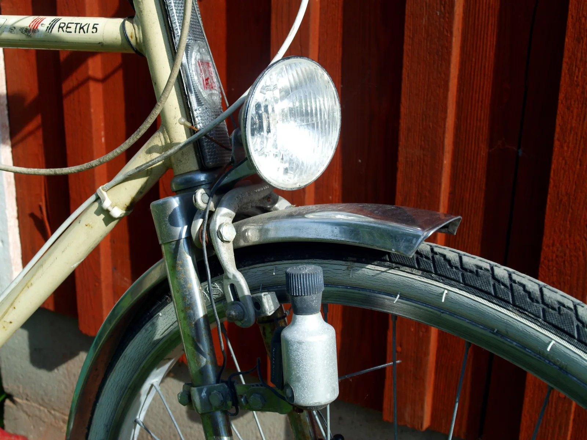
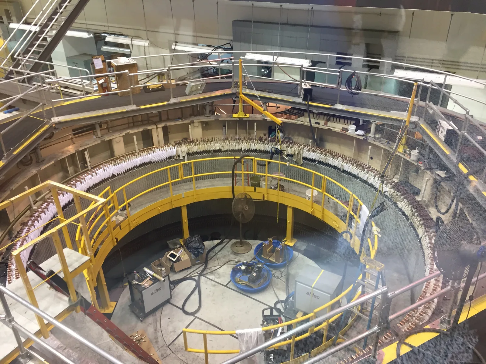
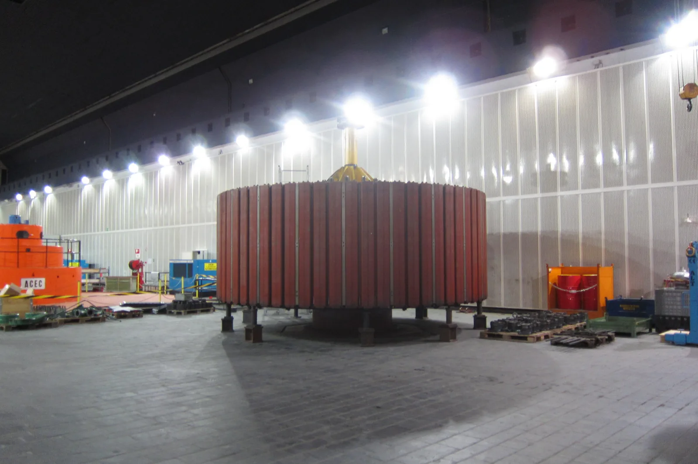

Generaattori ja vaihtovirta
Miksi tuulivoimalan pyörivä roottori antaa sähköverkkoon jännitteen, joka vaihtaa suuntaansa sata kertaa sekunnissa?
Pohjatiedot
- Käämiin syntyy induktiojännite $e = -N\,\Delta\Phi : \Delta t$ vain, kun sen läpi kulkeva magneettivuo $\Phi = BA$ muuttuuluku Sähkömagneettinen induktio
- Kentässä liikkuvaan johtimeen syntyy jännite $e = vBl$luku Sähkömagneettinen induktio
- Induktiovirta vastustaa muutosta, joka sen synnyttääluku Lenzin laki ja pyörrevirrat
Ydinpolku: tee vaiheet järjestyksessä. Valinnainen-tehtävät ovat lisäharjoittelua. Valinnaisia tehtäviä on 5.
Luvun tärkeät käsitteet Vapaaehtoinen
Tutustu luvun tärkeisiin käsitteisiin. Voit kirjoittaa niiden merkitykset sinulle vahvimmalla kielellä tai useammalla kielellä.
- Generaattori
- Laite, jossa käämi pyörii magneettikentässä tai magneetti pyörii käämin lähellä. Se muuttaa liike-energiaa sähköenergiaksi.
- Vaihtojännite
- Jännite, joka vaihtaa suuntaansa säännöllisesti. Kun käämi pyörii tasaisesti homogeenisessa magneettikentässä, syntyy sinimuotoinen vaihtojännite.
- Vaihtovirta
- Virta, joka kulkee vuorotellen kumpaankin suuntaan. Suomen sähköverkossa suunta vaihtuu sata kertaa sekunnissa.
- Huippuarvo
- Suurin arvo, jonka vaihtojännite tai vaihtovirta saa jakson aikana.
- Tehollinen arvo
- Se tasajännitteen arvo, joka antaisi vastuksessa saman keskimääräisen tehon kuin vaihtojännite. Pistorasian jännite ilmoitetaan tehollisena arvona.
Pohdinta
Pohjanmaan rannikolla tuulivoimalan roottori pyörii tasaisesti, noin kerran viidessä sekunnissa. Satojen kilometrien päässä kotona pistorasian jännite vaihtaa suuntaansa sata kertaa sekunnissa. Kaikki verkon voimalaitokset tuottavat jännitettä samalla taajuudella, ja verkon taajuus on $50\,\text{Hz}$. Tuulivoimala, vesivoimala ja ydinvoimala tuottavat sähkön samalla periaatteella: jokin pyörii magneettikentässä.
Miten tasainen pyöriminen saa aikaan jännitteen, joka vaihtaa suuntaansa?
Valinnainen Kertaa: milloin jännite syntyy?
Ennusta
Tee ennusteet ennen tutkimista 2 kysymystä
Ennuste 1: missä asennossa jännite on suurin?
Ennuste 2: kaksi kertaa nopeampi pyöriminen
Tutki
Käämi pyörii magneettikentässä. Vuon $\Phi$ ja jännitteen $e$ kuvaajat piirtyvät samalla. Pysäytä kuva, kun haluat katsoa käämin asentoa tarkemmin.
Simulaatio
Käyttöohje
Käämi nähdään akselinsa suunnasta. Kuparinen jana on käämin taso, ja sen päissä olevat ympyrät ovat käämin sivut. Risti (paperiin päin) ja piste (paperista ulos) näyttävät, mihin suuntaan induktiojännite ajaisi virtaa sivussa, jos käämiin kytkettäisiin kuorma. Siniset nuolet ovat sivujen nopeudet. Valitse kierrosten lukumäärä $N$. Säädä magneettivuon tiheyttä $B$ ja pyörimistaajuutta $f$. Kuvaajat piirtyvät $2{,}0\,\text{s}$:n jaksoissa, ja ne alkavat alusta aina, kun muutat säädintä. Pysäytä jäädyttää kuvan. Lukemat-rivin Nyt-arvot ovat pysäytetyn hetken arvot. Animaation nopeus muuttaa vain esityksen tahtia, ei pyörimistaajuutta.
Mallin oletukset
Kenttä on homogeeninen, ja käämi on suorakulmainen. Pinta-ala on $A = 4{,}0\,\text{cm} \cdot 5{,}0\,\text{cm} = 20\,\text{cm}^2$. Käämi pyörii tasaisesti. Käämiin ei ole kytketty kuormaa, joten siinä ei kulje virtaa eikä pyörittämiseen tarvita voimaa. Ristit ja pisteet näyttävät vain induktiojännitteen suunnan. Lukemat ovat mallin laskemia arvoja, eivät mittauksia.
Laskennan selitys
Kulma $\theta$ on käämin tason normaalin ja kentän välinen kulma. Hetkellä $t = 0$ se on nolla. Yhden kierroksen läpi kulkeva vuo on $\Phi = BA\cos\theta$, missä $\theta = 2\pi f t$. Jännite lasketaan vuosta induktiolailla\n\n$$e = -N\,\frac{\Delta\Phi}{\Delta t}$$\n\nhyvin lyhyellä aikavälillä $\Delta t$. Huippujännite $e_0$ on jännitteen suurin arvo yhden kierroksen aikana. Tehollinen arvo on $U = e_0 : \sqrt{2}$ ja jaksonaika $T = 1 : f$. Simulaatio ei käytä huippuarvon kaavaa. Kaava löydetään sen tuloksista.
Koe 1: vain pyörimistaajuus muuttuu
Testaa ennusteet. Käämissä on $500$ kierrosta ja kenttä on $0{,}20\,\text{T}$. Muuta vain pyörimistaajuutta. Kirjaa huippujännite ja jaksonaika ainakin taajuuksilla $1{,}0\,\text{Hz}$, $2{,}0\,\text{Hz}$ ja $4{,}0\,\text{Hz}$. Pysäytä kuva kerran, kun jännitteen kuvaaja on huipussaan. Katso käämin asentoa ja vuon arvoa.
Alkutila: kierroksia: $500$ kierrosta, magneettikenttä = $0{,}2\,\text{T}$, pyörimistaajuus = $1\,\text{Hz}$. Vakiona: kierroksia, magneettikenttä. Muutetaan: pyörimistaajuus.
| pyörimistaajuus | $e_0$ $(\text{V})$ | $T$ $(\text{s})$ |
|---|
Valinnainen Koe 2: vain magneettikenttä muuttuu
Käämissä on $500$ kierrosta ja pyörimistaajuus on $2{,}0\,\text{Hz}$. Muuta vain magneettivuon tiheyttä. Kirjaa huippujännite ainakin kentillä $0{,}10\,\text{T}$, $0{,}20\,\text{T}$ ja $0{,}30\,\text{T}$. Päättele lopuksi kaavasta, mitä huippujännitteelle tapahtuisi, jos kierrosten lukumäärä kaksinkertaistettaisiin.
Alkutila: kierroksia: $500$ kierrosta, magneettikenttä = $0{,}1\,\text{T}$, pyörimistaajuus = $2\,\text{Hz}$. Vakiona: kierroksia, pyörimistaajuus. Muutetaan: magneettikenttä.
| magneettikenttä | $e_0$ $(\text{V})$ |
|---|
Johtopäätös: mistä huippujännite riippuu?
Kirjoita taulukkosi perusteella: miten huippujännite ja jaksonaika riippuvat pyörimistaajuudesta? Missä asennossa käämi oli, kun jännite oli huipussaan? Kuinka suuri vuo silloin oli? Laske lopuksi kokeen 1 arvoista $e_0 : f$ ja vertaa sitä lukuun $NBA \cdot 2\pi$, kun $A = 0{,}0020\,\text{m}^2$.
Mallivastaus
Taajuudella $1{,}0\,\text{Hz}$ huippujännite on $1{,}26\,\text{V}$, taajuudella $2{,}0\,\text{Hz}$ se on $2{,}51\,\text{V}$ ja taajuudella $4{,}0\,\text{Hz}$ se on $5{,}03\,\text{V}$. Huippujännite on siis suoraan verrannollinen pyörimistaajuuteen. Jaksonaika on $1{,}0\,\text{s}$, $0{,}50\,\text{s}$ ja $0{,}25\,\text{s}$ eli $T = 1 : f$. Kun jännite oli huipussaan, käämin taso oli kentän suuntainen ja vuo oli nolla. Suhde on $e_0 : f = 1{,}26\,\text{V} : 1{,}0\,\text{Hz} \approx 1{,}26\,\text{V} \cdot \text{s}$. Toisaalta $NBA \cdot 2\pi = 500 \cdot 0{,}20\,\text{T} \cdot 0{,}0020\,\text{m}^2 \cdot 2\pi \approx 1{,}26\,\text{V} \cdot \text{s}$. Siis $e_0 = NBA \cdot 2\pi f$. Arvot ovat mallin laskemia.
Arvioi oma vastauksesi
Merkitse kohdat, jotka sinun vastauksessasi jo on.
Kertaa asia teoriatiivistelmästä ja harjoittele tehtävillä.
Teoriatiivistelmä
Ydinajatus
Pyörivä käämi magneettikentässä
Luvussa Sähkömagneettinen induktio käämiin syntyi induktiojännite, kun sen läpi kulkeva magneettivuo muuttui. Generaattori on laite, joka muuttaa pyörimisen sähköksi. Se saa vuon muuttumaan pyörittämällä käämiä magneetin napojen välissä.
Kun käämin taso on kohtisuorassa kenttää vastaan, kenttäviivoja kulkee käämin läpi eniten. Silloin vuo on suurin, $\Phi = BA$. Neljänneskierroksen jälkeen käämin taso on kentän suuntainen. Yksikään kenttäviiva ei kulje käämin läpi, joten vuo on nolla. Seuraavan neljänneksen jälkeen kenttä kulkee käämin läpi taas kohtisuoraan, mutta käämin toiselta puolelta. Silloin vuo on $-BA$. Kun käämi pyörii tasaisesti, vuo vaihtelee siis koko ajan arvojen $BA$ ja $-BA$ välillä.

Liukurenkaat ja harjat
Käämin johtimen päät on kytketty akselilla oleviin kahteen liukurenkaaseen. Renkaita koskettavat hiiliharjat. Harjojen kautta jännite johdetaan ulkoiseen virtapiiriin, esimerkiksi kuvan lamppuun. Tasavirtamoottorissa kommutaattori kääntää virran suunnan (luku Voima virtajohtimeen: sähkömoottori ja kaiutin). Liukurenkaat eivät käännä virran suuntaa. Siksi ulkoiseen piiriin tulee käämiin syntyvä jännite sellaisenaan.
Miksi jännite on sinimuotoinen
Induktiolain mukaan jännite ei riipu siitä, kuinka suuri vuo on. Jännite riippuu siitä, kuinka nopeasti vuo muuttuu. Kuvaajassa $\Phi(t)$ muutosnopeus on kuvaajan jyrkkyys.
Kun vuo on suurimmillaan, käämin sivut liikkuvat kenttäviivojen suuntaisesti. Vuo ei silloin hetkeen juuri muutu, ja jännite on nolla. Kun käämin taso on kentän suuntainen, vuo on nolla. Silloin sivut liikkuvat kohtisuoraan kenttäviivojen poikki, ja vuo muuttuu nopeimmin. Silloin jännite on suurimmillaan.
Vuo vaihtelee kosinin tavoin, ja sen jyrkkyys vaihtelee sinin tavoin. Siksi jännite on sinimuotoinen eli sen kuvaaja on siniaallon muotoinen. Jokaisella puolikierroksella vuon muutoksen suunta kääntyy. Silloin myös jännitteen merkki kääntyy. Syntyy vaihtojännite. Suljetussa piirissä kulkee vaihtovirta, jonka suunta vaihtuu kahdesti jokaisen kierroksen aikana.


Voimalaitoksen generaattori ja tuulivoimala
Voimalaitosten suurissa generaattoreissa pyörii sähkömagneetti, ja käämit ovat paikallaan sen ympärillä. Paikallaan olevan käämin läpi kulkeva vuo muuttuu samalla tavalla kuin pyörivässä käämissä. Siksi syntyy samanlainen vaihtojännite. Suuri virta saadaan käämeistä ilman liukukoskettimia.
Tuulivoimalassa tuuli pyörittää roottoria, ja roottorin akseli pyörittää generaattoria. Roottori pyörii hitaasti, noin $10$–$15$ kierrosta minuutissa. Siksi generaattorissa on joko vaihteisto, joka nostaa pyörimisnopeutta, tai paljon magneettinapoja. Tuulen nopeus vaihtelee. Siksi taajuusmuuttaja muuntaa generaattorin jännitteen verkon taajuuteen $50\,\text{Hz}$.
Suomessa oli vuoden 2024 lopussa $1835$ tuulivoimalaa. Niiden yhteenlaskettu nimellisteho oli $8358\,\text{MW}$. Ne tuottivat vuonna 2024 sähköä $19{,}8\,\text{TWh}$. Se on noin $24\,\%$ Suomen sähkönkulutuksesta (Suomen Uusiutuvat ry, tuulivoimatilastot 2024).
Generaattorin jännite
Käämissä on $N$ kierrosta, ja sen pinta-ala on $A$. Käämi pyörii tasaisesti homogeenisessa eli joka kohdassa samanlaisessa magneettikentässä $B$. Pyörimistaajuus on $f$. Hetkellä $t = 0$ käämin taso on kohtisuorassa kenttää vastaan. Silloin käämin läpi kulkeva vuo ja käämiin syntyvä jännite ovat
$$\begin{aligned} \Phi &= BA\cos(2\pi f t) \\[4pt] e &= e_0 \sin(2\pi f t) \\[4pt] e_0 &= NBA \cdot 2\pi f \end{aligned}$$
missä $\Phi$ on magneettivuo yhden kierroksen läpi (Wb), $e$ jännitteen hetkellinen arvo eli arvo tietyllä hetkellä (V), $e_0$ jännitteen huippuarvo eli suurin arvo (V), $N$ kierrosten lukumäärä, $B$ magneettivuon tiheys (T), $A$ käämin pinta-ala (m²) ja $f$ pyörimistaajuus eli kierrosten määrä sekunnissa (Hz). Jännitteen taajuus on sama kuin pyörimistaajuus. Jaksonaika eli yhden kierroksen kesto on $T = 1 : f$.
Mistä huippuarvo tulee
Huippuarvo saadaan liikkuvan johtimen jännitteestä $e = vBl$ (luku Sähkömagneettinen induktio). Suorakulmaisen käämin kaksi sivua, joiden pituus on $l$, kiertävät akselia säteellä $b : 2$. Tässä $b$ on käämin leveys. Sivujen nopeus on $v = 2\pi f \cdot b : 2 = \pi f b$.
Jännitteeseen vaikuttaa vain se nopeuden osa, joka on kohtisuorassa kenttää vastaan. Se on $v \sin\theta$, missä $\theta$ on nopeuden ja kentän välinen kulma. Kumpaankin sivuun syntyy jännite $B l v \sin\theta$, ja sivujen jännitteet summautuvat kierroksessa.
Yhdessä kierroksessa jännite on siis $2 B l \cdot \pi f b \sin\theta = BA \cdot 2\pi f \sin\theta$, koska $lb = A$. Kun kierroksia on $N$, jännite on $N$-kertainen. Kun $\theta = 90^\circ$, käämin taso on kentän suuntainen ja jännite on huippuarvossaan $e_0 = NBA \cdot 2\pi f$. Kaksinkertainen pyörimistaajuus kaksinkertaistaa sekä jännitteen taajuuden että huippuarvon, koska sivut liikkuvat kaksi kertaa nopeammin.
Tehollinen arvo
Vaihtojännitteen keskiarvo yhden jakson aikana on nolla. Lamppu tai vastus lämpenee silti, koska teho $p = ui$ on positiivinen kummallakin virran suunnalla. Vastuksen teho vaihtelee nollan ja huippuarvon $P_0 = U_0 I_0$ välillä. Sen keskiarvo on puolet huippuarvosta.
Tehollinen arvo on se tasajännite tai tasavirta, joka tuottaisi vastukseen saman keskimääräisen tehon:
$$\begin{aligned} U &= \frac{U_0}{\sqrt{2}} \\[4pt] I &= \frac{I_0}{\sqrt{2}} \end{aligned}$$
missä $U_0$ ja $I_0$ ovat jännitteen ja virran huippuarvot ja $U$ ja $I$ tehollisarvot. Silloin keskimääräinen teho on $P = UI$, kuten tasavirralla.
Pistorasian $230\,\text{V}$ on tehollinen arvo. Jännitteen huippuarvo on $230\,\text{V} \cdot \sqrt{2} \approx 325\,\text{V}$. Taajuus on $50\,\text{Hz}$, joten jännite vaihtaa suuntaansa sata kertaa sekunnissa. Fingrid pitää kantaverkon taajuuden normaalisti välillä $49{,}9$–$50{,}1\,\text{Hz}$. Mittarit näyttävät vaihtojännitteen ja -virran tehollisarvoina.
Yleinen virhekäsitys
Moni ajattelee, että jännite on suurin silloin, kun käämin läpi kulkee eniten kenttäviivoja eli käämin taso on kohtisuorassa kenttää vastaan. Silloin jännite on kuitenkin nolla, koska vuo ei sillä hetkellä muutu. Jännite on suurin, kun käämin taso on kentän suuntainen ja vuo on nolla, koska silloin vuo muuttuu nopeimmin.
Toinen yleinen virhe on pitää pistorasian $230\,\text{V}$:a jännitteen suurimpana arvona. Se on tehollinen arvo. Jännite käy välillä $-325\,\text{V}$ ja $325\,\text{V}$.
Kolmas virhe on päätellä, että vaihtovirta ei siirrä energiaa, koska sen keskiarvo on nolla. Teho on positiivinen kummallakin virran suunnalla.
Tiivistelmä
- Generaattorissa käämi pyörii magneettikentässä (tai magneetti käämin sisällä). Käämin läpi kulkeva vuo $\Phi = BA\cos(2\pi f t)$ vaihtelee jatkuvasti.
- Induktiojännite riippuu vuon muutosnopeudesta. Se on nolla, kun vuo on suurin. Se on suurin, kun käämin taso on kentän suuntainen ja vuo on nolla.
- Syntyy sinimuotoinen vaihtojännite $e = e_0 \sin(2\pi f t)$. Sen huippuarvo on $e_0 = NBA \cdot 2\pi f$, ja sen taajuus on sama kuin pyörimistaajuus.
- Sinimuotoisen vaihtojännitteen tehollinen arvo on $U = U_0 : \sqrt{2}$ ja virran $I = I_0 : \sqrt{2}$. Keskimääräinen teho on $P = UI$. Verkkojännitteen $230\,\text{V}$ huippuarvo on noin $325\,\text{V}$ ja taajuus $50\,\text{Hz}$.
- Tuulivoimalan roottori pyörittää generaattoria, ja taajuusmuuttaja sovittaa jännitteen verkon taajuuteen.
Valinnainen Palaa ennusteisiisi
Vertaa ennusteitasi simulaation kuvaajiin ja kaavaan $e_0 = NBA \cdot 2\pi f$. Palaa sitten alun kysymykseen: miten tasainen pyöriminen saa aikaan jännitteen, joka vaihtaa suuntaansa? Mitä pistorasian jännitteen taajuus $50\,\text{Hz}$ kertoo verkon generaattoreista?
Haluaisitko muuttaa ennustettasi?
Sovella
Esimerkki
Tehtävä
Opetuskäytössä olevan generaattorin käämissä on $250$ kierrosta. Suorakulmaisen käämin sivujen pituudet ovat $4{,}0\,\text{cm}$ ja $5{,}0\,\text{cm}$. Käämi pyörii homogeenisessa magneettikentässä, jonka magneettivuon tiheys on $0{,}18\,\text{T}$. Se tekee $12$ kierrosta sekunnissa. Kuinka suuri on käämiin syntyvän vaihtojännitteen tehollinen arvo?
Vaihe 1/7
Tunnetut ja kysytty. Kierrosten lukumäärä on $N = 250$. Käämin sivut ovat $4{,}0\,\text{cm}$ ja $5{,}0\,\text{cm}$. Magneettivuon tiheys on $B = 0{,}18\,\text{T}$ ja pyörimistaajuus $f = 12\,\text{Hz}$. Kysytään jännitteen tehollista arvoa $U$.
Vaihe 2/7
Periaate. Käämi pyörii tasaisesti homogeenisessa kentässä. Siksi siihen syntyy sinimuotoinen vaihtojännite, jonka huippuarvo on $e_0 = NBA \cdot 2\pi f$. Sinimuotoisen jännitteen tehollinen arvo on huippuarvo jaettuna luvulla $\sqrt{2}$.
Vaihe 3/7
Kaava ratkaistuna. $$\begin{aligned} e_0 &= NBA \cdot 2\pi f \\ U &= \frac{e_0}{\sqrt{2}} = \frac{NBA \cdot 2\pi f}{\sqrt{2}} \end{aligned}$$
Vaihe 4/7
Yksikkömuunnokset. Pinta-ala neliömetreinä:
Pyörimistaajuus on $12$ kierrosta sekunnissa eli $f = 12\,\text{Hz}$.
Vaihe 5/7
Sijoitus. Lasketaan ensin huippuarvo ja sitten tehollinen arvo:
$$\begin{aligned} e_0 &= NBA \cdot 2\pi f \\ &= 250 \cdot 0{,}18\,\text{T} \cdot 0{,}0020\,\text{m}^2 \\ &\quad \cdot 2\pi \cdot 12\,\tfrac{1}{\text{s}} \\ &= 6{,}786\,\text{V} \\[6pt] U &= \frac{6{,}786\,\text{V}}{\sqrt{2}} \\ &= 4{,}798\,\text{V} \end{aligned}$$
Vaihe 6/7
Tulos. Jännitteen tehollinen arvo on $U \approx 4{,}8\,\text{V}$ ja huippuarvo noin $6{,}8\,\text{V}$. Tulos ilmoitetaan kahdella merkitsevällä numerolla, kuten käämin mitat ja magneettivuon tiheys.
Vaihe 7/7
Järkevyys. Yksiköt sopivat:
Pyöreillä luvuilla
mikä sopii huippuarvoon. Tehollinen arvo on pienempi kuin huippuarvo, kuten pitääkin. Muutaman voltin jännite on samaa suuruusluokkaa kuin polkupyörän dynamon jännite.
Valinnainen Etsi virhe
Sovella uuteen tilanteeseen: mökin tuulivoimala
Mökin pienessä tuulivoimalassa roottori pyörittää suoraan kestomagneettia. Magneetin ympärillä on paikallaan oleva käämi. Yksinkertaistetussa mallissa käämissä on $120$ kierrosta, sen pinta-ala on $0{,}015\,\text{m}^2$ ja magneetin kenttä käämin kohdalla on $0{,}40\,\text{T}$. Roottori pyörii $300$ kierrosta minuutissa.
Kuinka suuri on käämiin syntyvän vaihtojännitteen tehollinen arvo? Vastaa voltteina.
Vihje 1: ohjaava kysymys
Mikä on pyörimistaajuus hertseinä, kun roottori pyörii $300$ kierrosta minuutissa?
Vihje 2: mikä yhteys
Huippuarvo on $e_0 = NBA \cdot 2\pi f$. Tehollinen arvo saadaan jakamalla huippuarvo luvulla $\sqrt{2}$.
Vihje 3: välivaihe
joten
Näytä ratkaisu
Annettu
kierroksia $N = 120$, käämin pinta-ala $A = 0{,}015\,\text{m}^2$, magneettivuon tiheys $B = 0{,}40\,\text{T}$, pyörimisnopeus $300$ kierrosta minuutissa
Kysytty
jännitteen tehollinen arvo $U$ voltteina
Periaate
Käämit pysyvät paikallaan ja magneetti pyörii. Käämin läpi kulkeva vuo muuttuu silti samalla tavalla kuin pyörivässä käämissä tasaisessa kentässä. Siksi syntyy sinimuotoinen vaihtojännite, jonka huippuarvo on $e_0 = NBA \cdot 2\pi f$. Sen tehollinen arvo on $U = e_0 : \sqrt{2}$.
Kaava
Muunnokset
pyörimistaajuus
Sijoitus
Vastaus
$16\,\text{V}$
Vastauksessa on kaksi merkitsevää numeroa, kuten magneettivuon tiheydessä $0{,}40\,\text{T}$ ja pinta-alassa $0{,}015\,\text{m}^2$.
Järkevyys
Pyöreillä luvuilla
Tehollinen arvo on noin $0{,}7$ kertaa tämä. Muutaman kymmenen voltin jännite sopii pienelle tuulivoimalalle, joka lataa akkuja.
Tarkista osaamisesi
Exit ticket
Vastaa ensin itse. Avaa vastaus vasta sitten.
- Pistorasian jännite on $230\,\text{V}$. Kuinka suuri on jännitteen huippuarvo?
Vastaus
$230\,\text{V}$ on tehollinen arvo, joten huippuarvo on
$U_0$$= U \cdot \sqrt{2}$$= 230\,\text{V} \cdot \sqrt{2}$$\approx 325\,\text{V}$ - Miksi voimalaitoksen generaattorissa pyörii magneetti eikä käämi, josta sähkö otetaan?
Vastaus
Paikallaan olevan käämin läpi kulkeva vuo muuttuu pyörivän magneetin vuoksi samalla tavalla kuin pyörivässä käämissä. Siksi syntyy sama vaihtojännite. Suuri virta saadaan paikallaan olevista käämeistä suoraan johtimiin ilman liukurenkaita ja harjoja.
1. Käsite: tehollinen arvo
2. Laske: vedenkeittimen virta
Vedenkeittimen teho on $2{,}00\,\text{kW}$, kun se on kytketty $230\,\text{V}$:n verkkojännitteeseen. Kuinka suuri on vedenkeittimen virran huippuarvo? Vastaa ampeereina.
Vihje 1: ohjaava kysymys
Onko $230\,\text{V}$ tehollinen arvo vai huippuarvo? Onko vedenkeittimen teho keskimääräinen teho?
Vihje 2: mikä yhteys
Tehollisarvoilla $P = UI$, ja huippuarvo on $I_0 = \sqrt{2} \cdot I$.
Vihje 3: välivaihe
Näytä ratkaisu
Annettu
vedenkeittimen teho $P = 2{,}00\,\text{kW}$, verkkojännitteen tehollinen arvo $U = 230\,\text{V}$
Kysytty
virran huippuarvo $I_0$ ampeereina
Periaate
Verkkojännite $230\,\text{V}$ on tehollinen arvo, ja vedenkeittimen teho on keskimääräinen teho. Tehollisarvoilla keskimääräinen teho on $P = UI$. Siitä saadaan virran tehollinen arvo. Sinimuotoisen virran huippuarvo on $\sqrt{2}$-kertainen tehollisarvoon verrattuna.
Kaava
$P = UI$, josta $I = \dfrac{P}{U}$, ja
Muunnokset
Sijoitus
Vastaus
$12{,}3\,\text{A}$
Vastauksessa on kolme merkitsevää numeroa, kuten tehossa $2{,}00\,\text{kW}$ ja jännitteessä $230\,\text{V}$.
Järkevyys
Virran tehollinen arvo $8{,}7\,\text{A}$ jää alle kotitalouden tavallisen $10\,\text{A}$:n sulakkeen, kuten pitääkin. Huippuarvo on suurempi kuin tehollinen arvo, noin $1{,}4$-kertainen.
Ehdotus: yksi vastaus ei kerro kaikkea osaamisestasi. Kertaa asia teoriatiivistelmästä ja tee ydintehtävät.
Valinnainen 3. Selitä: miksi jännite on sinimuotoinen?
Selitä, miksi tasaisesti pyörivään käämiin syntyy sinimuotoinen vaihtojännite. Kerro, missä käämin asennossa jännite on nolla ja missä se on suurin. Kerro myös, miksi jännitteen merkki vaihtuu.
Mallivastaus
Kun käämi pyörii, sen läpi kulkeva vuo vaihtelee kosinin tavoin: $\Phi = BA\cos(2\pi f t)$. Induktiolain mukaan jännite on verrannollinen vuon muutosnopeuteen eli $\Phi(t)$-kuvaajan jyrkkyyteen. Kun käämin taso on kohtisuorassa kenttää vastaan, vuo on suurimmillaan mutta ei hetkeen muutu, koska sivut liikkuvat kenttäviivojen suuntaisesti. Silloin jännite on nolla. Kun käämin taso on kentän suuntainen, vuo on nolla. Silloin sivut liikkuvat kohtisuoraan kenttäviivojen poikki ja vuo muuttuu nopeimmin, joten jännite on suurin. Kosinikäyrän jyrkkyys vaihtelee sinin tavoin, joten jännite on $e = e_0 \sin(2\pi f t)$. Puolen kierroksen välein vuon muutoksen suunta kääntyy (vuo alkaa kasvaa pienenemisen sijaan). Siksi jännitteen merkki ja virran suunta vaihtuvat.
Arvioi oma vastauksesi
Merkitse kohdat, jotka sinun vastauksessasi jo on.
Kertaa asia teoriatiivistelmästä ja harjoittele tehtävillä.
Kertaa luvun käsitteet
Jos valitset Kertaa myöhemmin, kortti menee kertauspakkaasi.
- Generaattori
- Laite, joka muuttaa liike-energiaa sähköenergiaksi induktion avulla.
- Vaihtovirta
- Virta, jonka suunta ja suuruus vaihtelevat jaksollisesti.
- Tehollisarvo
- Vaihtovirran arvo, joka vastaa lämpövaikutukseltaan yhtä suurta tasavirtaa.
Tehtävät
Taso 1 · perusharjoitus 5 tehtävää
Yksi kaava tai yksi päättelyaskel. Tee ensin ydintehtävät. Loput ovat lisäharjoitusta.
- Tehtävä 7-1Ydintehtävä
Koulun generaattorimallin käämissä on $300$ kierrosta, ja sen pinta-ala on $0{,}0030\,\text{m}^2$. Käämi pyörii homogeenisessa magneettikentässä $0{,}15\,\text{T}$. Pyörimistaajuus on $10\,\text{Hz}$. Kuinka suuri on käämiin syntyvän jännitteen huippuarvo?
Vastaus
$8{,}5\,\text{V}$
Näytä ratkaisu
Annettu
kierroksia $N = 300$, pinta-ala $A = 0{,}0030\,\text{m}^2$, magneettivuon tiheys $B = 0{,}15\,\text{T}$, pyörimistaajuus $f = 10\,\text{Hz}$
Kysytty
jännitteen huippuarvo $e_0$ voltteina
Periaate
Käämi pyörii tasaisesti homogeenisessa kentässä. Siksi sen läpi kulkeva vuo vaihtelee sinimuotoisesti ja käämiin syntyy sinimuotoinen vaihtojännite. Sen huippuarvo on $e_0 = NBA \cdot 2\pi f$. Jännite on suurin, kun käämin taso on kentän suuntainen ja vuo muuttuu nopeimmin.
Kaava
$e_0 = NBA \cdot 2\pi f$
Muunnokset
Ei tarvita: suureet ovat SI-yksiköissä, ja $\text{T} \cdot \text{m}^2 \cdot \tfrac{1}{\text{s}} = \text{V}$.
Sijoitus
$e_0$$= 300 \cdot 0{,}15\,\text{T} \cdot 0{,}0030\,\text{m}^2 \cdot 2\pi \cdot 10\,\tfrac{1}{\text{s}}$$= 8{,}482\,\text{V}$Vastaus
$8{,}5\,\text{V}$
Kaksi merkitsevää numeroa kuten lähtöarvoissa.
Järkevyys
Pyöreillä luvuilla
$300 \cdot 0{,}15\,\text{T} \cdot 0{,}003\,\text{m}^2$$\approx 0{,}14\,\text{Wb}$ja kun tämä kerrotaan luvulla $2\pi \cdot 10 \approx 60$, tulos on noin $8\,\text{V}$. Muutaman voltin jännite sopii käsin pyöritettävään opetusgeneraattoriin.
- Tehtävä 7-2Ydintehtävä
Matkustajalentokoneen sähköverkossa on vaihtojännite. Sen tehollinen arvo on $115\,\text{V}$ ja taajuus $400\,\text{Hz}$. Kuinka suuri on jännitteen huippuarvo?
Vastaus
$163\,\text{V}$
Näytä ratkaisu
Annettu
jännitteen tehollinen arvo $U = 115\,\text{V}$, taajuus $400\,\text{Hz}$
Kysytty
jännitteen huippuarvo $U_0$ voltteina
Periaate
Vaihtojännite ilmoitetaan tehollisarvona. Sinimuotoisen jännitteen tehollinen arvo on huippuarvo jaettuna luvulla $\sqrt{2}$. Siksi huippuarvo on $\sqrt{2}$-kertainen. Taajuus ei vaikuta tähän suhteeseen.
Kaava
$U = \dfrac{U_0}{\sqrt{2}}$, josta $U_0 = \sqrt{2} \cdot U$
Muunnokset
Ei tarvita.
Sijoitus
$U_0$$= \sqrt{2} \cdot 115\,\text{V}$$= 162{,}63\,\text{V}$Vastaus
$163\,\text{V}$
Kolme merkitsevää numeroa kuten jännitteessä $115\,\text{V}$.
Järkevyys
Huippuarvo on noin $1{,}4$-kertainen tehollisarvoon nähden: $1{,}4 \cdot 115\,\text{V} \approx 161\,\text{V}$. Samalla tavalla kodin $230\,\text{V}$:n huippuarvo on noin $325\,\text{V}$.
- Tehtävä 7-3
Vedenkeittimen vastuksessa kulkevan sinimuotoisen vaihtovirran huippuarvo on $8{,}5\,\text{A}$. Kuinka suuri on virran tehollinen arvo?
Vastaus
$6{,}0\,\text{A}$
Näytä ratkaisu
Annettu
virran huippuarvo $I_0 = 8{,}5\,\text{A}$, virta sinimuotoinen
Kysytty
virran tehollinen arvo $I$ ampeereina
Periaate
Tehollinen arvo on se tasavirta, joka tuottaisi vastukseen saman keskimääräisen tehon. Sinimuotoisella virralla vastuksen teho on keskimäärin puolet huipputehosta. Siksi tehollinen arvo on huippuarvo jaettuna luvulla $\sqrt{2}$.
Kaava
$I = \dfrac{I_0}{\sqrt{2}}$
Muunnokset
Ei tarvita.
Sijoitus
$I$$= \dfrac{8{,}5\,\text{A}}{\sqrt{2}}$$= 6{,}010\,\text{A}$Vastaus
$6{,}0\,\text{A}$
Kaksi merkitsevää numeroa kuten huippuarvossa $8{,}5\,\text{A}$.
Järkevyys
Tehollinen arvo on noin $0{,}7$ kertaa huippuarvo: $0{,}7 \cdot 8{,}5\,\text{A} \approx 6\,\text{A}$. Verkkojännitteellä $230\,\text{V}$ tämä vastaa noin $1{,}4\,\text{kW}$:n tehoa, mikä sopii vedenkeittimeen.
- Tehtävä 7-4
Vesivoimalan generaattorin akseli tekee $1500$ kierrosta minuutissa. Kuinka suuri on akselin pyörimistaajuus hertseinä?
Vastaus
$25\,\text{Hz}$
Näytä ratkaisu
Annettu
akseli tekee $1500$ kierrosta minuutissa
Kysytty
pyörimistaajuus $f$ hertseinä
Periaate
Pyörimistaajuus on kierrosten lukumäärä sekunnissa. Tässä kierrokset tiedetään minuutissa. Siksi ne jaetaan minuutin sekunneilla.
Kaava
$f = \dfrac{n}{t}$, missä $n$ on kierrosten lukumäärä ajassa $t$
Muunnokset
$t = 1\,\text{min} = 60\,\text{s}$
Sijoitus
$f$$= \dfrac{1500}{60\,\text{s}}$$= 25\,\tfrac{1}{\text{s}}$$= 25\,\text{Hz}$Vastaus
$25\,\text{Hz}$
Lukema $1500$ kierrosta minuutissa on tarkka, joten tulos on täsmälleen $25\,\text{Hz}$.
Järkevyys
Verkon taajuus $50\,\text{Hz}$ vastaisi yhdellä magneettinapaparilla $3000$ kierrosta minuutissa. Tässä kierroksia on vain puolet siitä, joten taajuuskin olisi puolet. Siksi tällaisessa generaattorissa on kaksi napaparia, jotta jännitteen taajuus olisi $50\,\text{Hz}$.
- Tehtävä 7-5
Sähkölämmitin on kytketty verkkojännitteeseen, jonka tehollinen arvo on $230\,\text{V}$. Lämmittimen virran tehollinen arvo on $4{,}35\,\text{A}$. Kuinka suuri on lämmittimen keskimääräinen teho? Anna vastaus kilowatteina.
Vastaus
$1{,}00\,\text{kW}$
Näytä ratkaisu
Annettu
jännitteen tehollinen arvo $U = 230\,\text{V}$, virran tehollinen arvo $I = 4{,}35\,\text{A}$
Kysytty
keskimääräinen teho $P$ kilowatteina
Periaate
Tehollinen arvo on määritelty niin, että keskimääräinen teho lasketaan tehollisarvoista samalla kaavalla kuin tasavirralla. Lämmitin on vastus, joten jännite ja virta ovat samassa tahdissa.
Kaava
$P = UI$
Muunnokset
Tulos muunnetaan kilowateiksi: $1\,\text{kW} = 1000\,\text{W}$.
Sijoitus
$P$$= 230\,\text{V} \cdot 4{,}35\,\text{A}$$= 1000{,}5\,\text{W}$$= 1000{,}5 \cdot 0{,}001\,\text{kW}$$= 1{,}0005\,\text{kW}$Vastaus
$1{,}00\,\text{kW}$
Kolme merkitsevää numeroa kuten virrassa $4{,}35\,\text{A}$ ja jännitteessä $230\,\text{V}$.
Järkevyys
Tavallisen sähkölämmittimen teho on $0{,}5$–$2\,\text{kW}$. Huippuarvoilla laskettu teho olisi $2{,}00\,\text{kW}$, kaksinkertainen. Se on kuitenkin vain hetkellinen huippuarvo, ei keskiarvo.
Taso 2 · soveltava harjoitus 4 tehtävää
Kaksi vaihetta, mittausaineiston käsittely, yksikkömuunnos tai kaavan ratkaiseminen. Tee ensin ydintehtävät. Loput ovat lisäharjoitusta.
- Tehtävä 7-6Ydintehtävä
Generaattorin suorakulmaisessa käämissä on $150$ kierrosta. Käämin sivujen pituudet ovat $6{,}0\,\text{cm}$ ja $8{,}0\,\text{cm}$. Käämi pyörii homogeenisessa magneettikentässä $0{,}25\,\text{T}$ ja tekee $1200$ kierrosta minuutissa. Kuinka suuri on käämiin syntyvän jännitteen huippuarvo?
Vastaus
$23\,\text{V}$
Näytä ratkaisu
Annettu
kierroksia $N = 150$, käämin sivut $6{,}0\,\text{cm}$ ja $8{,}0\,\text{cm}$, magneettivuon tiheys $B = 0{,}25\,\text{T}$, pyörimisnopeus $1200$ kierrosta minuutissa
Kysytty
jännitteen huippuarvo $e_0$ voltteina
Periaate
Käämi pyörii tasaisesti homogeenisessa kentässä. Siksi siihen syntyy sinimuotoinen vaihtojännite, jonka huippuarvo on $e_0 = NBA \cdot 2\pi f$. Ensin lasketaan käämin pinta-ala ja pyörimistaajuus SI-yksiköissä.
Kaava
$A = ab$ ja $e_0 = NBA \cdot 2\pi f$
Muunnokset
$A$$= 6{,}0 \cdot 0{,}01\,\text{m} \cdot 8{,}0 \cdot 0{,}01\,\text{m}$$= 0{,}0048\,\text{m}^2$$f$$= \dfrac{1200}{60\,\text{s}}$$= 20\,\text{Hz}$Sijoitus
$e_0$$= 150 \cdot 0{,}25\,\text{T} \cdot 0{,}0048\,\text{m}^2 \cdot 2\pi \cdot 20\,\tfrac{1}{\text{s}}$$= 22{,}62\,\text{V}$Vastaus
$23\,\text{V}$
Kaksi merkitsevää numeroa kuten käämin mitoissa ja magneettivuon tiheydessä.
Järkevyys
Pyöreillä luvuilla
$150 \cdot 0{,}25\,\text{T} \cdot 0{,}005\,\text{m}^2$$\approx 0{,}19\,\text{Wb}$$2\pi \cdot 20\,\tfrac{1}{\text{s}} \approx 125\,\tfrac{1}{\text{s}}$, joten $e_0 \approx 23\,\text{V}$. Jos pyörimisnopeutta $1200$ olisi käytetty hertseinä, tulos olisi $60$-kertainen.
- Tehtävä 7-7Ydintehtävä
Kuvaajassa on pienen generaattorin jännite ajan funktiona. Generaattorin käämissä on $200$ kierrosta, ja sen pinta-ala on $30\,\text{cm}^2$. Käämi pyörii homogeenisessa magneettikentässä. Lue kuvaajasta jännitteen huippuarvo ja jaksonaika.
Kuinka suuri on magneettivuon tiheys?
Vastaus
$0{,}13\,\text{T}$
Näytä ratkaisu
Annettu
kierroksia $N = 200$, pinta-ala $A = 30\,\text{cm}^2$, kuvaajasta luettu huippuarvo ja jaksonaika
Kysytty
magneettivuon tiheys $B$ tesloina
Periaate
Käämi pyörii tasaisesti homogeenisessa kentässä. Siksi sen jännite on sinimuotoinen ja huippuarvo on $e_0 = NBA \cdot 2\pi f$. Kuvaajasta saadaan huippuarvo ja jaksonaika. Jaksonajasta saadaan pyörimistaajuus $f = 1 : T$.
Kuvaajan lukeminen
Käyrän huiput ovat ruudukon viivalla $12\,\text{V}$ (hetkillä $10\,\text{ms}$ ja $50\,\text{ms}$), joten $e_0 = 12\,\text{V}$. Käyrä on nolla ja nousemassa hetkillä $0\,\text{ms}$, $40\,\text{ms}$ ja $80\,\text{ms}$. Siksi yksi jakso kestää $T = 40\,\text{ms}$.
Kaava
$f = \dfrac{1}{T}$ ja $e_0 = NBA \cdot 2\pi f$, josta
$B$$= \dfrac{e_0}{NA \cdot 2\pi f}$$= \dfrac{e_0 T}{NA \cdot 2\pi}$Muunnokset
$T$$= 40\,\text{ms}$$= 40 \cdot 0{,}001\,\text{s}$$= 0{,}040\,\text{s}$$A$$= 30\,\text{cm}^2$$= 30 \cdot 0{,}0001\,\text{m}^2$$= 0{,}0030\,\text{m}^2$Sijoitus
$f$$= \dfrac{1}{0{,}040\,\text{s}}$$= 25\,\text{Hz}$$B$$= \dfrac{12\,\text{V}}{200 \cdot 0{,}0030\,\text{m}^2 \cdot 2\pi \cdot 25\,\tfrac{1}{\text{s}}}$$= \dfrac{12\,\text{V}}{94{,}25\,\tfrac{\text{m}^2}{\text{s}}}$$= 0{,}1273\,\text{T}$Vastaus
$0{,}13\,\text{T}$
Vastauksessa on kaksi merkitsevää numeroa, koska kuvaajasta luetut arvot $12\,\text{V}$ ja $40\,\text{ms}$ ovat kahden numeron tarkkuudella.
Järkevyys
Kestomagneetin kenttä on tyypillisesti kymmenesosia teslaa, joten $0{,}13\,\text{T}$ on uskottava. Tarkistus:
$200 \cdot 0{,}13\,\text{T} \cdot 0{,}0030\,\text{m}^2 \cdot 2\pi \cdot 25\,\tfrac{1}{\text{s}}$$\approx 12{,}3\,\text{V}$mikä vastaa kuvaajan huippua.
- Tehtävä 7-8
Retkeilijä lataa akkua käsin pyöritettävällä generaattorilla. Jännitteen tehollisen arvon pitää olla $12\,\text{V}$. Generaattorin käämissä on $200$ kierrosta, sen pinta-ala on $0{,}0050\,\text{m}^2$ ja magneettikenttä on $0{,}30\,\text{T}$.
Millä pyörimistaajuudella käämiä on pyöritettävä?
Vastaus
$9{,}0\,\text{Hz}$
Näytä ratkaisu
Annettu
jännitteen tehollinen arvo $U = 12\,\text{V}$, kierroksia $N = 200$, pinta-ala $A = 0{,}0050\,\text{m}^2$, magneettivuon tiheys $B = 0{,}30\,\text{T}$
Kysytty
pyörimistaajuus $f$ hertseinä
Periaate
Pyörivän käämin jännite on sinimuotoinen, ja sen huippuarvo on $e_0 = NBA \cdot 2\pi f$. Annettu $12\,\text{V}$ on tehollinen arvo, joten huippuarvo on $\sqrt{2}$-kertainen. Pyörimistaajuus ratkaistaan huippuarvon kaavasta.
Kaava
$e_0 = \sqrt{2} \cdot U$ ja $e_0 = NBA \cdot 2\pi f$, josta
$f$$= \dfrac{\sqrt{2} \cdot U}{NBA \cdot 2\pi}$Muunnokset
Ei tarvita: suureet ovat SI-yksiköissä.
Sijoitus
$e_0$$= \sqrt{2} \cdot 12\,\text{V}$$= 16{,}97\,\text{V}$$f$$= \dfrac{16{,}97\,\text{V}}{200 \cdot 0{,}30\,\text{T} \cdot 0{,}0050\,\text{m}^2 \cdot 2\pi}$$= \dfrac{16{,}97\,\text{V}}{1{,}885\,\text{V}\cdot\text{s}}$$= 9{,}003\,\text{Hz}$Vastaus
$9{,}0\,\text{Hz}$
Kaksi merkitsevää numeroa kuten jännitteessä $12\,\text{V}$ ja kentässä $0{,}30\,\text{T}$.
Järkevyys
Yhdeksän kierrosta sekunnissa on vauhdikasta mutta mahdollista kammella, jossa on välitys. Jos tehollinen arvo olisi sijoitettu huippuarvon paikalle, taajuudeksi olisi tullut liian pieni $6{,}4\,\text{Hz}$. Silloin jännitteen tehollinen arvo olisi jäänyt alle $12\,\text{V}$:n.
- Tehtävä 7-9
Suomen tuulivoimalat tuottivat vuonna 2024 sähköä $19{,}8\,\text{TWh}$. Vuoden lopussa niiden yhteenlaskettu nimellisteho oli $8358\,\text{MW}$ (Suomen Uusiutuvat ry, tuulivoimatilastot 2024). Vuodessa 2024 oli $366$ vuorokautta.
Keskimääräinen teho oli kuinka monta prosenttia vuoden lopun nimellistehosta?
Vastaus
$27\,\%$
Näytä ratkaisu
Annettu
tuotettu sähköenergia $E = 19{,}8\,\text{TWh}$ vuonna 2024, vuoden pituus $366$ vuorokautta, nimellisteho vuoden lopussa $P_\text{n} = 8358\,\text{MW}$ (Suomen Uusiutuvat ry)
Kysytty
keskimääräisen tehon osuus nimellistehosta prosentteina
Periaate
Keskimääräinen teho on vuoden aikana tuotettu energia jaettuna vuoden pituudella. Tuulivoimalat tuottavat nimellistehonsa eli suurimman tehonsa vain kovalla tuulella. Siksi keskiteho on selvästi nimellistehoa pienempi. Osuus saadaan jakamalla keskiteho nimellisteholla.
Kaava
$P = \dfrac{E}{t}$ ja osuus $= \dfrac{P}{P_\text{n}} \cdot 100\,\%$
Muunnokset
$t$$= 366 \cdot 24\,\text{h}$$= 8784\,\text{h}$$E$$= 19{,}8\,\text{TWh}$$= 19{,}8 \cdot 10^{12}\,\text{Wh}$$P_\text{n}$$= 8358\,\text{MW}$$= 8358 \cdot 10^{6}\,\text{W}$Sijoitus
$P$$= \dfrac{19{,}8 \cdot 10^{12}\,\text{Wh}}{8784\,\text{h}}$$= 2{,}254 \cdot 10^{9}\,\text{W}$ja osuus $= \dfrac{2{,}254 \cdot 10^{9}\,\text{W}}{8358 \cdot 10^{6}\,\text{W}} \cdot 100\,\% = 26{,}97\,\%$
Vastaus
$27\,\%$
Vastauksessa on kaksi merkitsevää numeroa, koska tuotanto $19{,}8\,\text{TWh}$ on ilmoitettu kolmella numerolla ja tulos on arvio.
Järkevyys
Tuulivoimaloiden keskiteho on tyypillisesti neljännes tai kolmannes nimellistehosta, joten $27\,\%$ on uskottava. Todellinen osuus on hieman suurempi. Nimellisteho kasvoi vuoden aikana, joten alkuvuonna voimaloita oli vähemmän kuin vuoden lopussa.
Taso 3 · haastava 3 tehtävää
Valinnaisia tehtäviä. Sovellat, yhdistät kaksi ideaa tai päättelet uudessa tilanteessa.
- Tehtävä 7-10
Generaattorin käämi pyörii tasaisesti, ja sen jännitteen huippuarvo on $20{,}0\,\text{V}$. Hetkellä $t = 0$ käämin taso on kohtisuorassa kenttää vastaan.
Kuinka suuri on käämin jännite, kun käämi on kääntynyt tästä asennosta $30^\circ$?
Vastaus
$10{,}0\,\text{V}$
Näytä ratkaisu
Annettu
jännitteen huippuarvo $e_0 = 20{,}0\,\text{V}$, hetkellä $t = 0$ käämin taso on kohtisuorassa kenttää vastaan, käämi kääntyy tästä asennosta $30^\circ$
Kysytty
jännitteen hetkellinen arvo $e$ voltteina
Periaate
Kun käämin taso on kohtisuorassa kenttää vastaan, vuo on suurin eikä hetkeen muutu. Silloin jännite on nolla. Siitä lähtien jännite kasvaa sinin tavoin, $e = e_0 \sin\theta$. Tässä $\theta$ on kulma, jonka käämi on kääntynyt tästä asennosta. Jännite on huippuarvossaan kulmassa $90^\circ$, kun käämin taso on kentän suuntainen.
Kaava
$e = e_0 \sin\theta$
Muunnokset
Ei tarvita.
Sijoitus
$e$$= 20{,}0\,\text{V} \cdot \sin 30^\circ$$= 20{,}0\,\text{V} \cdot 0{,}5$$= 10{,}0\,\text{V}$Vastaus
$10{,}0\,\text{V}$
Kolme merkitsevää numeroa kuten huippuarvossa $20{,}0\,\text{V}$.
Järkevyys
Kulma $30^\circ$ on kolmasosa matkasta nollajännitteen asennosta huippuasentoon. Jännite on silti jo puolet huippuarvosta, koska sinikäyrä nousee alussa jyrkimmin. Kosinilla laskettu $17{,}3\,\text{V}$ olisi väärin, koska se antaisi suurimman jännitteen asennossa, jossa vuo ei muutu.
- Tehtävä 7-11
Generaattorin jännitteen huippuarvo on $40\,\text{V}$. Generaattori on kytketty $40\,\Omega$:n vastukseen. Generaattorin oma resistanssi on niin pieni, että sen voi jättää huomiotta. Kuinka suuri on vastuksen keskimääräinen teho?
Vastaus
$20\,\text{W}$
Näytä ratkaisu
Annettu
generaattorin jännitteen huippuarvo $U_0 = 40\,\text{V}$, vastus $R = 40\,\Omega$, generaattorin resistanssi mitätön
Kysytty
vastuksen keskimääräinen teho $P$ watteina
Periaate
Generaattorin resistanssi on mitätön, joten koko jännite on vastuksen yli. Keskimääräinen teho lasketaan tehollisarvoilla kuten tasavirralla: $P = UI$. Ohmin lain mukaan $I = U : R$, joten $P = U^2 : R$. Huippuarvolla laskettu teho olisi vain hetkellinen huipputeho.
Kaava
$U$$= \dfrac{U_0}{\sqrt{2}}$$P$$= UI$$= \dfrac{U^2}{R}$$= \dfrac{U_0^2}{2R}$Muunnokset
Ei tarvita.
Sijoitus
$U$$= \dfrac{40\,\text{V}}{\sqrt{2}}$$= 28{,}28\,\text{V}$$P$$= \dfrac{(28{,}28\,\text{V})^2}{40\,\Omega}$$= \dfrac{800\,\text{V}^2}{40\,\Omega}$$= 20\,\text{W}$Vastaus
$20\,\text{W}$
Kaksi merkitsevää numeroa kuten jännitteessä $40\,\text{V}$ ja resistanssissa $40\,\Omega$.
Järkevyys
Hetkellinen huipputeho on
$U_0^2 : R$$= 1600\,\text{V}^2 : 40\,\Omega$$= 40\,\text{W}$ja keskiarvo on puolet siitä, koska teho vaihtelee nollan ja huippuarvon välillä. Yksiköt:
$\tfrac{\text{V}^2}{\Omega}$$= \text{V} \cdot \text{A}$$= \text{W}$ - Tehtävä 7-12
Suoravetoisessa tuulivoimalassa kestomagneettigeneraattori pyörii samaa tahtia kuin roottori. Generaattorin jännitteen tehollinen arvo on $690\,\text{V}$, kun roottori pyörii $15$ kierrosta minuutissa.
Tuuli heikkenee, ja roottori pyörii enää $9{,}0$ kierrosta minuutissa. Generaattorin magneetit ja käämit ovat samat. Taajuusmuuttajaa ei oteta huomioon.
Kuinka suuri on generaattorin jännitteen tehollinen arvo nyt?
Vastaus
$410\,\text{V}$
Näytä ratkaisu
Annettu
tehollinen jännite $U_1 = 690\,\text{V}$ pyörimisnopeudella $15$ kierrosta minuutissa, uusi pyörimisnopeus $9{,}0$ kierrosta minuutissa, magneetit ja käämit samat
Kysytty
uusi tehollinen jännite $U_2$ voltteina
Periaate
Generaattorin huippujännite on $e_0 = NBA \cdot 2\pi f$. Kun $N$, $B$ ja $A$ pysyvät samoina, huippujännite on suoraan verrannollinen pyörimistaajuuteen. Silloin myös tehollinen arvo $U = e_0 : \sqrt{2}$ on suoraan verrannollinen pyörimistaajuuteen. Suoravetoisessa voimalassa generaattori pyörii samaa tahtia kuin roottori. Siksi taajuus on verrannollinen roottorin kierroksiin minuutissa.
Kaava
$\dfrac{U_2}{U_1} = \dfrac{f_2}{f_1}$, josta $U_2 = U_1 \cdot \dfrac{f_2}{f_1}$
Muunnokset
Ei tarvita. Suhteessa kierrokset minuutissa supistuvat pois, joten niitä ei tarvitse muuntaa hertseiksi.
Sijoitus
$U_2$$= 690\,\text{V} \cdot \dfrac{9{,}0}{15}$$= 690\,\text{V} \cdot 0{,}60$$= 414\,\text{V}$Vastaus
noin $410\,\text{V}$, kaksi merkitsevää numeroa kuten pyörimisnopeuksissa $15$ ja $9{,}0$ kierrosta minuutissa.
Järkevyys
Pyörimisnopeus pieneni $40\,\%$, joten myös jännite pienenee $40\,\%$. Samalla jännitteen taajuus pienenee. Siksi tuulivoimalassa tarvitaan taajuusmuuttaja, joka sovittaa sekä jännitteen että taajuuden verkkoon.